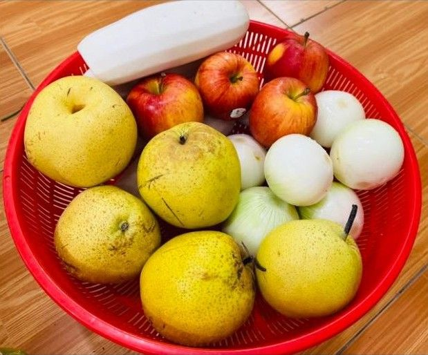
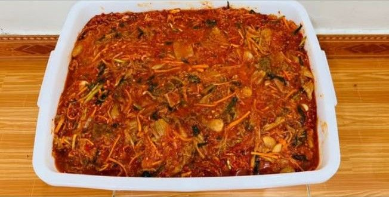

Nguyên liệu & món
Kim chi nhà làm: vì sao em chỉ làm khi trời nắng, cân thế nào cho sòng phẳng, cất tủ ra sao

☘️📌♻️ Nhiều chị em ăn kim chi em Kỹ làm rồi là bảo “mua ngoài không nuốt được”, cứ Tết đến xuân về lại nô nức nhắn em: “làm kim chi đi em thèm lắm rồi”. Em thì nói thật luôn: em làm vì đam mê, nêm nếm theo khẩu vị nhà em chứ không theo công thức từng gam nào cả. Thế mà mấy năm nay chị em vẫn trung thành, em quý lắm ạ 🥰

Vì sao em chỉ làm khi trời nắng?
Các bác để ý sẽ thấy em hay đăng: “sang tuần nắng đẹp đủ điều kiện làm kim chi”, có hôm còn chụp cả dự báo thời tiết lên gom đơn 😜 Một mẻ của em thường 40–50 kg, cải thảo bổ đôi, muối, rửa, để ráo, rồi chậu, rổ, thùng cũng phải rửa sạch phơi khô. Trời nồm ẩm kiểu Hải Phòng thì đồ nghề phơi mãi không khô, cải để ráo cũng lâu. Nắng ráo thì mọi khâu gọn gàng, sạch sẽ hơn hẳn – nên em chờ nắng.
Một mẻ có những gì?
Nhìn rổ nguyên liệu là thấy: cải thảo, củ cải, cà rốt, hẹ, hành tây, lê, táo, gừng, tỏi, ớt. Lê và táo cho vị ngọt thanh tự nhiên. Tỉ lệ thì như em nói rồi đấy, nêm theo miệng nhà em – các chị em làm ở nhà cứ nêm ít một, nếm dần cho vừa khẩu vị nhà mình.
Cái khó không phải nguyên liệu mà là công: có mẻ em làm đến 1 giờ đêm, 2 giờ sáng mới xong, hôm sau mắt chỉ còn ti hí 😂
Cân thế nào cho sòng phẳng
Túi kim chi nhà em lúc nhúc như nhợn con thế thôi chứ ăn cuốn lắm. Em chỉ tính cân phần rau cải, nước sốt thêm vào là em không tính tiền. Túi nào hơn cân thì em tính hơn, thiếu thì em bù – vậy cho sòng phẳng cả đôi bên.
Lỡ tay mặn thì sao?
Có một mẻ em nếm lại thấy mặn hơn em tưởng, chả hiểu hôm ấy “tẩu hỏa nhập ma” thế nào mà cho lắm mắm thế 😔 Bố em làm nông chứ có làm nhà máy nước mắm đâu! Em lên xin lỗi quý zị ngay, rồi lên mẻ khác nhạt hơn cho ai chưa ăn hết mẻ mặn. Làm hàng ăn thì sai là phải nhận, các chị em ạ.
Cất tủ thế nào cho ngon lâu
Đây là phần em đọc thêm từ các hướng dẫn bảo quản, các chị em tham khảo nhé:
- Kim chi lên men rất nhanh ở nhiệt độ phòng, chỉ một hai ngày đã chua. Mua hoặc làm xong nên cho vào ngăn mát tủ lạnh, chỗ lạnh nhất, khoảng 0–4 °C là đẹp.
- Đựng hộp kín, nén cho nước sốt ngập rau, mỗi lần gắp dùng đũa sạch, khô. Đũa dính nước bọt, dính dầu mỡ là kim chi nhanh hỏng.
- Để tủ lạnh kim chi vẫn chua dần theo ngày. Ngon nhất là ăn trong khoảng 2 tuần đầu; để lâu hơn thì chua nhiều, hợp nấu canh, xào, rán bánh.
- Thấy mốc, nhớt, mùi lạ (không phải mùi chua) thì bỏ đi, đừng tiếc.
Ăn với gì?
Ông giáo nhà em chả cần gì nhiều: sáng bát cơm nóng với kim chi là xong bữa 😂 Ngoài ra ăn kèm thịt nướng, lẩu, mì, cơm rang; kim chi chua quá thì nấu canh kim chi với đậu phụ, thịt ba chỉ là hết sạch nồi.
Chị em nào thích thì cứ ới em Kỹ, có nắng là em gom đơn làm mẻ mới nhé ạ! 📞📞📞
Kinh nghiệm bếp nhà, không thay tư vấn của chuyên gia an toàn thực phẩm. Nhiệt độ và thời gian bảo quản theo hướng dẫn của Đại học Colorado State và khuyến cáo bảo quản lạnh 0–4 °C.
Em tham khảo: Bài Facebook của Cô Kỹ (01–04/2026); hướng dẫn làm và bảo quản kim chi của Đại học Colorado State (Food Smart Colorado); khuyến cáo bảo quản lạnh 0–4 °C của các nhà sản xuất tủ kim chi.
Kinh nghiệm và kiến thức bếp nhà, em viết lại theo cách hiểu của em – không thay lời khuyên của bác sĩ, chuyên gia dinh dưỡng. Thấy chỗ nào chưa đúng, các bác nhắn em sửa nhé.